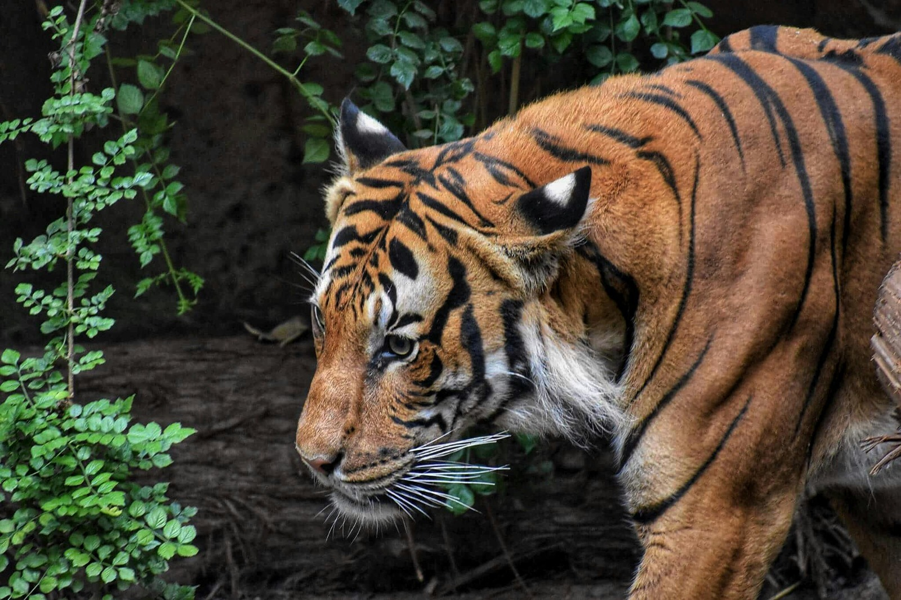
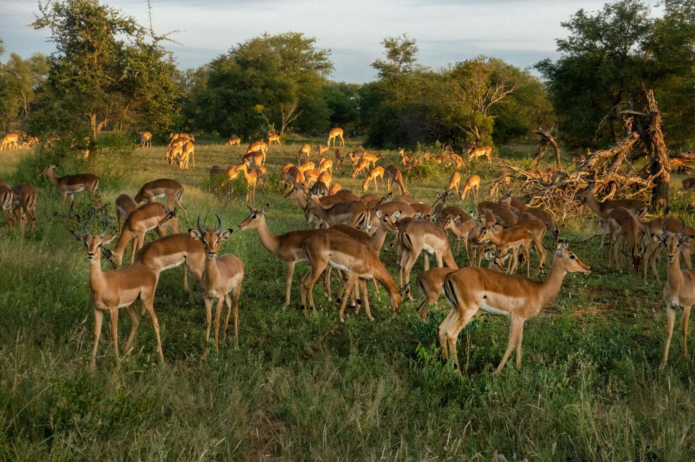
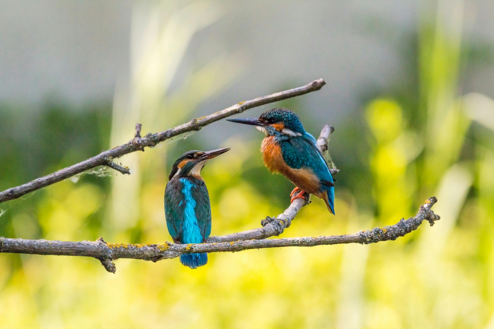

Did you know that there are 450 wildlife sanctuaries in India? At AdventuRush, we believe that exploring these sanctuaries is not just a journey, but a celebration of nature’s wonders. India’s wildlife is a rich tapestry of diverse species, from majestic tigers to vibrant birds. Each sanctuary offers a unique window into this incredible biodiversity. In winter, the beauty of these habitats comes alive in a different hue. The cooler climate makes wildlife more active and visible, enhancing your experience. Visiting wildlife sanctuaries in India during this season gives you a chance to witness nature at its finest. Choosing from a variety of tailored packages that ensure you dont miss this magical time.
During this period, the chances of tiger sightings increase as they bask in the winter sun. The park’s landscape, dotted with ancient ruins, adds a touch of mystique to your safari. Our package includes comfortable stays and expert-guided tours, making your wildlife adventure both thrilling and safe. It’s a perfect blend of excitement and relaxation, tailored for wildlife enthusiasts
Kaziranga, a UNESCO World Heritage site, is a haven for the endangered one-horned rhinoceros. Visiting this park in winter, you’ll witness the lush greenery transform into a misty paradise. The cool weather from November to April is ideal for exploring. You’ll be amazed by the variety of wildlife, including elephants, tigers, and numerous bird species.
A safari in Kaziranga during winter is an experience in itself. The misty mornings add a mystical charm to the landscape, and as the sun rises, you’ll witness the park come to life. Bird watchers will be delighted as winter is the season for migratory birds here.
When it comes to the best wildlife sanctuary in India to visit in December, Sundarbans is a name that resonates with many. This mangrove forest, stretching across West Bengal and Bangladesh, is home to the elusive Royal Bengal Tiger.
Winter, with its clearer skies and cooler temperatures, makes it the ideal time for exploring this unique ecosystem. The park is considered to be a bird watcher’s paradise, with a variety of migratory and local bird species. The tranquil environment, combined with the thrill of possibly spotting a tiger, makes Sundarbans a must-visit for wildlife enthusiasts.
Join us at AdventuRush for an unforgettable journey to Jim Corbett National Park, starting at just ₹2,599. This park is not just a popular destination but a jewel among the wildlife sanctuaries in India. In the heart of Uttarakhand, winter is the best season to visit. From November to February, the weather is cool and animals like tigers, elephants, and a variety of birds are easier to spot.
During your stay, you will explore the dense forests and grasslands of the park. Each zone in Jim Corbett offers a unique experience, with the Ramganga Reservoir being a special attraction for bird watchers. Our guided safaris are tailored to give you the best wildlife viewing, ensuring your safety and comfort. You’ll return with not just photos but also stories to tell.
Bandhavgarh National Park is often mentioned as the best wildlife sanctuary in India to visit in December. Its dense forests and open meadows make it a haven for wildlife, especially tigers. Winter is the perfect time to visit, with clear skies and pleasant temperatures enhancing your safari experience.
Here, you’ll embark on safaris that take you deep into tiger territory. Bandhavgarh is known for its high tiger density, giving you excellent chances of sightings. Apart from tigers, keep an eye out for leopards, deer, and various bird species. The park’s ancient fort adds a touch of heritage to your wildlife adventure.
Bharatpur Bird Sanctuary, also known as Keoladeo National Park, ranks high as one of the best wildlife sanctuaries in India. Winter here welcomes thousands of migratory birds, turning the park into a birdwatcher’s paradise.
The sanctuary’s shallow wetlands are ideal for birding. You can see rare species like the Siberian Crane among hundreds of other bird species. Apart from birds, the park is home to animals like Sambar deer, nilgai, and wild boar. A visit between October and March is ideal. Walking trails and cycle-rickshaws are available for a close-to-nature experience.
Join us for a 2N/3D journey into the heart of Kanha National Park, with packages starting from ₹23,999. Known for its lush sal and bamboo forests, this park is a haven for wildlife enthusiasts. Winter, particularly from October to April, is the best time to visit, with pleasant weather and enhanced wildlife visibility.

In Kanha, you’ll have the opportunity to see a range of wildlife, including tigers, leopards, and the rare Barasingha. Our safaris take you through the park’s vast meadows and dense forests, offering ample opportunities for wildlife sighting and photography. Our experienced guides ensure your journey is both safe and informative, enhancing your connection with nature.
Gir National Park in Gujarat is a name that resonates among the top 10 wildlife sanctuaries in India, is the last abode of the Asiatic lion. Visiting Gir from December to March offers the perfect opportunity to witness these majestic creatures in their natural habitat.
The park’s dry deciduous forests and grassy scrublands are not only home to Asiatic lions but also provide shelter to a variety of other wildlife like leopards, hyenas, and several deer species. Bird lovers will also find Gir fascinating, with more than 300 bird species recorded. You’ll learn about the conservation efforts to protect Asiatic lions and the rich biodiversity of the region. Our commitment is to offer you a memorable and responsible wildlife experience.